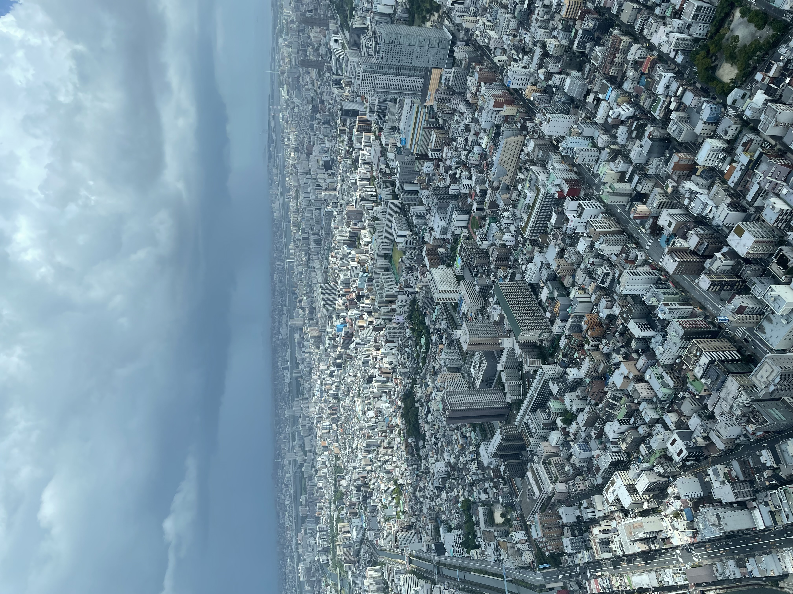
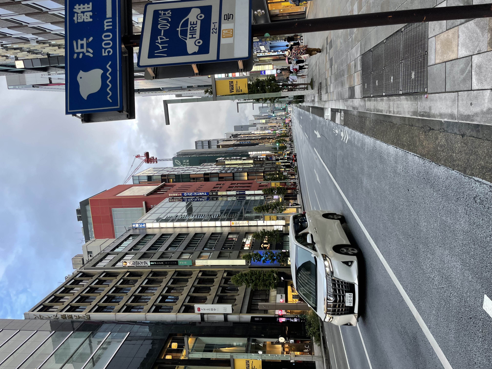
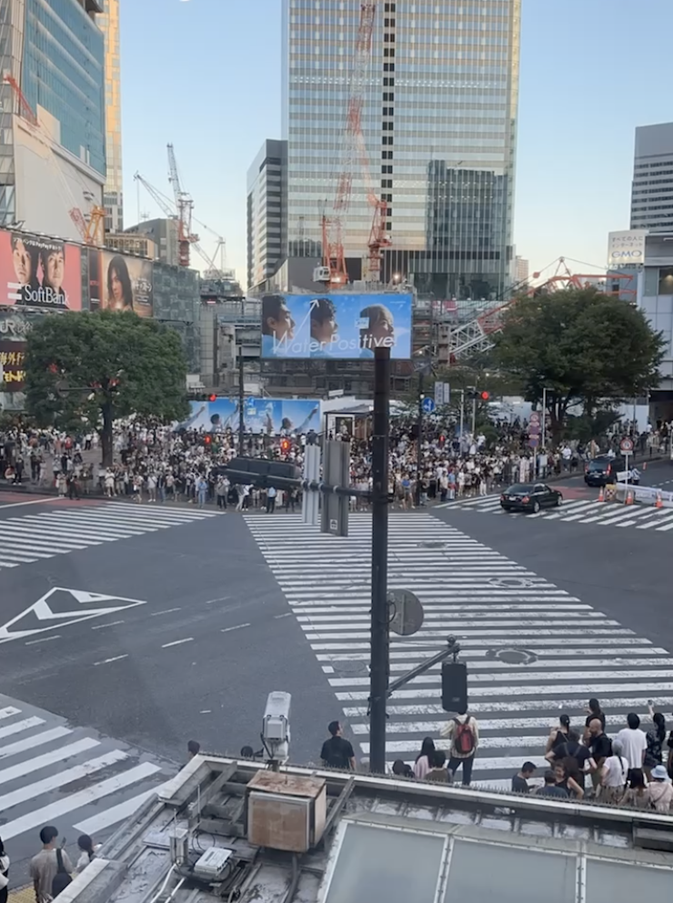
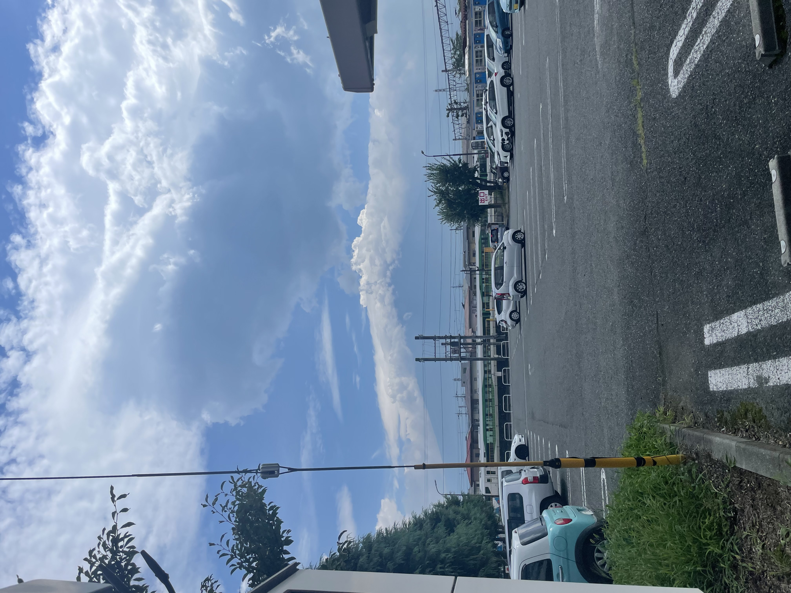
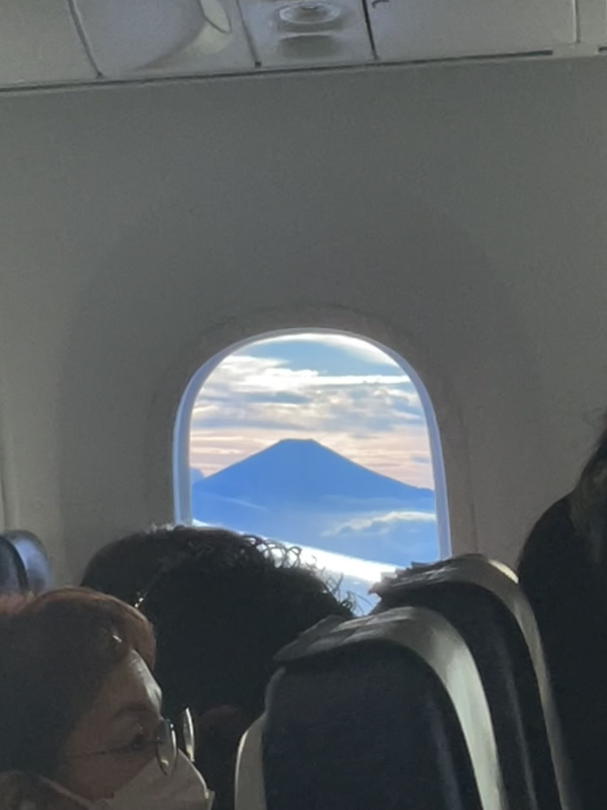
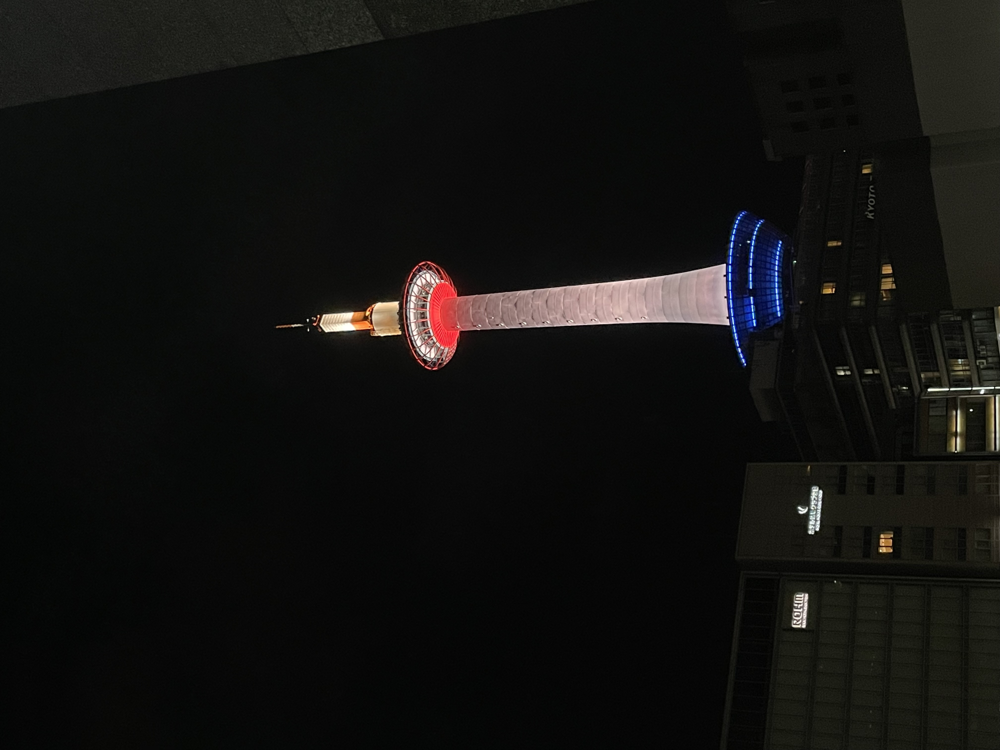
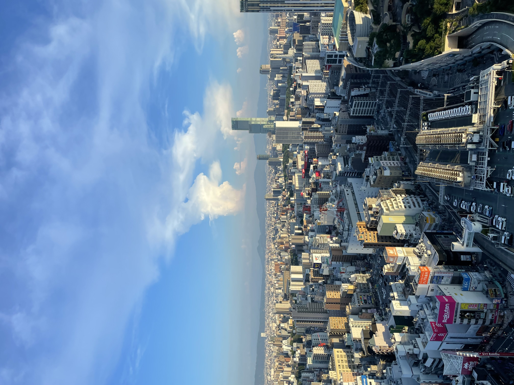
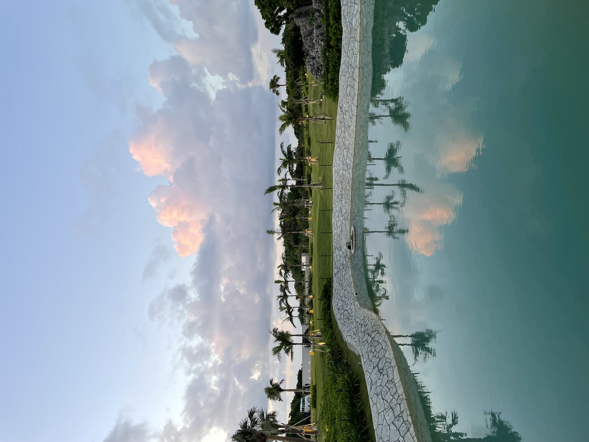
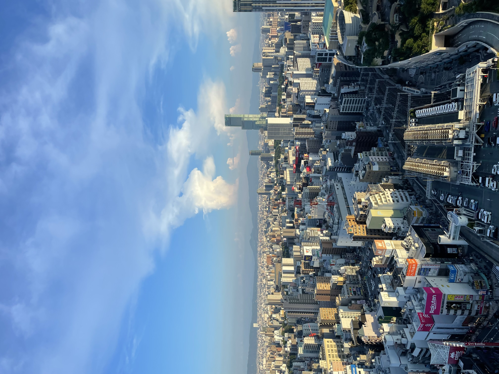
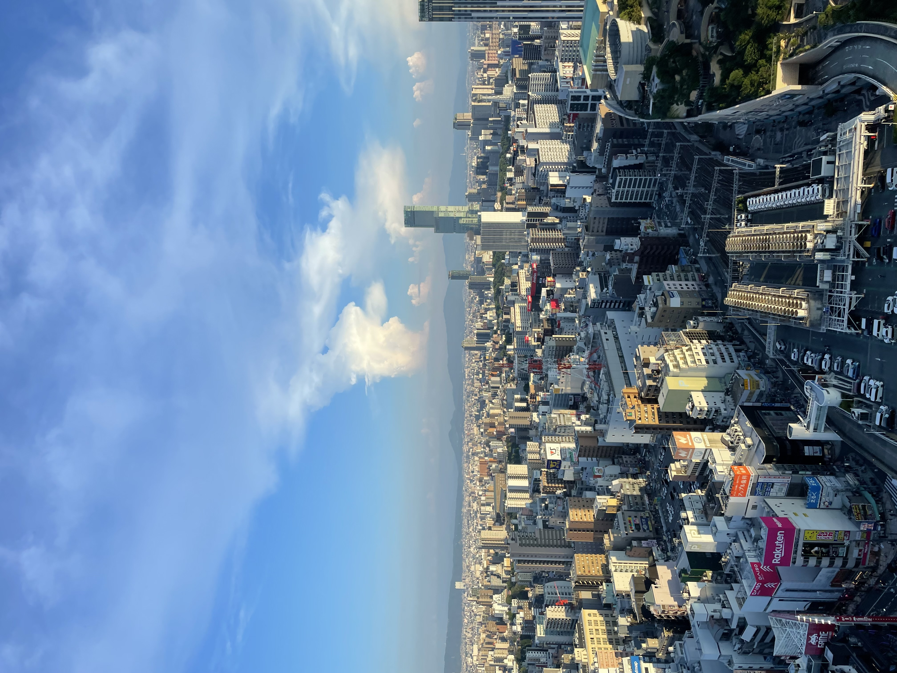

Tijdens mijn reis in Japan ben ik natuurlijk niet maar op één plek gebleven.
In totaal ben ik er drie weken geweest, in die drie weken heb ik vijf grote Japanse steden bezocht.
Zo ging ik van de grootste metropool ter wereld, naar een eiland waar ik rustig op mijn strandbedje
kon
blijven liggen.
Tokyo



Als eerste begon de reis in de hoofdstad van Japan, Tokyo. Tokyo is de grootste metropool van de wereld,
en dat is te merken ook. Ik ben er in totaal 6 dagen geweest, maar dat was bij lange na niet genoeg tijd
om de hele stad te verkennen. Er valt namelijk van alles te beleven, zoals het bezoeken van tempels of
juist lopen tussen de gigantische wolkenkrabbers. In de stad wonen er ongeveer 13,96 miljoen mensen, en dat is te
merken ook, want Tokyo staat namelijk nooit stil. Vandaar de enorme pleinen gevuld met zebrapaden en mensen.


Daarnaast hebben wij in Tokyo ook de natuur opgezocht. Wij rezen met de trein namelijk naar de Mount
Fuji. De
Mount Fuji is een vulkaan
die ongeveer 112 Km buiten Tokyo ligt, dat is dus een behoorlijk stukje. Toen we daar aankwamen bleek
het
bewolkt en dus was de berg zelf
niet goed te zien. Een paar weken later, toen wij weer terugvlogen naar Tokyo, keek ik uit mijn
vliegtuigraampje. Ik zag toen toch nog de berg
die zich 2 weken geleden nog voor ons verstopt had. Toen kon zo'n mooie foto natuurlijk ook niet
ontbreken.
Kyoto

Na een lange treinreis van 6 uur lang, kwamen wij eindelijk aan in kyoto. Kyoto is een stad met ongeveer
1,5
miljoen inwoners en staat vooral bekend
om de vele heilige plekken en tempels. Naast alle oudheden kent de plek ook een moderne kant. Dat is
bijvoorbeeld te zien aan de Kyoto en de vele hippe restaurantjes.
Osaka

Na een paar dagen door te hebben gebracht in Kyoto gingen wij met de trein weer verder naar Osaka. Dat is
de
derde grootste stad van Japan met ruim 2,7 miloen inwoners.
Osaka kent veel toeristische attracties die wij bij lange na niet allemaal bezocht hebben. Tijdens ons
verblijf in Osaka, rezen wij ook een dagje naar een nabijgelegen plaatsje
genaamd Nara. Nara staat bekend om Nara Park, waar talloze hertjes rondlopen om eten te geven.
Hiroshima
Om wat meer te leren over de heftige gebeurtenissen in de geschiedenis van Japan, rezen wij naar
Hiroshima.
Hiroshima staat voornamelijk bekend om de eerste
gevallen atoombom op 6 augustus 1945. Daar bezochten wij de Genbaku Dome en het Peace memorial museum.
Het
Peace Memorial Museum in Hiroshima staat bekend om zijn
focus op vrede, herdenking en het tonen van de verwoestende impact van de atoombom die op 6 augustus
1945 in
Hiroshima werd ingezet. Het museum is gewijd aan het
herdenken van de slachtoffers van deze nucleaire aanval en aan het streven naar wereldvrede en het
voorkomen
van vergelijkbare toekomstige rampen.
Okinawa

Na al dat lopen door al die grote steden, vlogen wij naar een Japans eilandje in de Oost-Chinese zee,
genaamd
Okinawa. Daar hebben wij een weekje
doorgebracht en heerlijk genoten van het eilandleven. Okinawa kent prachtige stranden en de mooiste
zonsondergangen.


 
